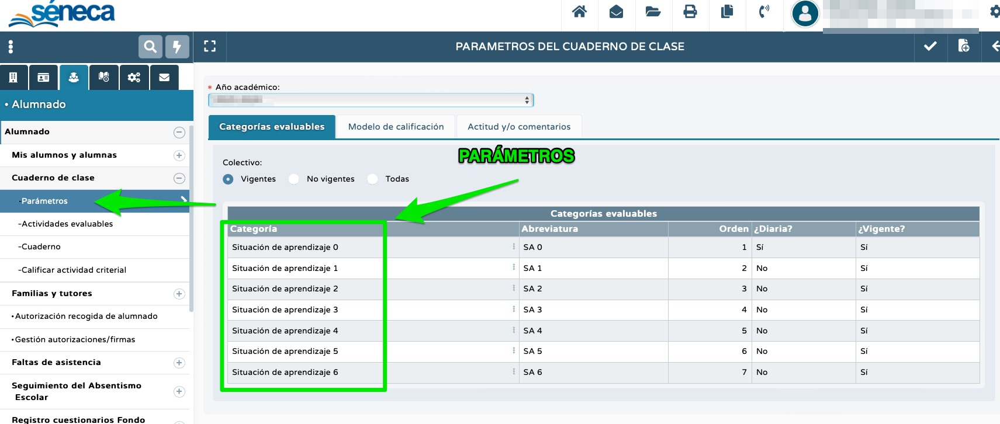
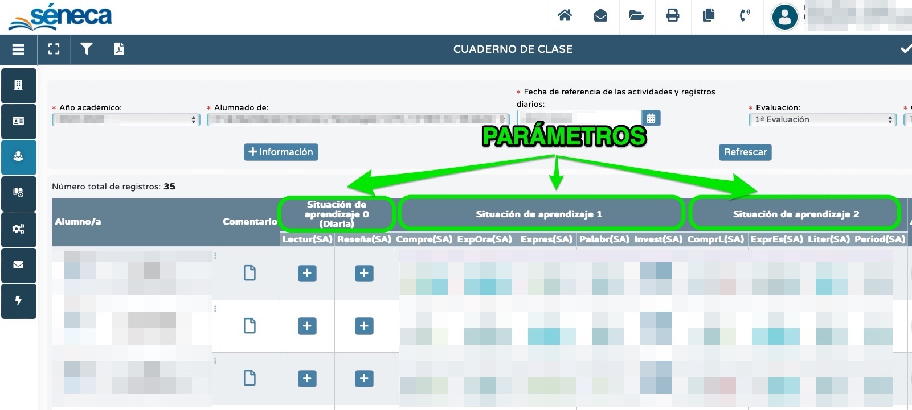

El cuaderno de Séneca es una herramienta digital adecuada para la gestión de toda la información derivada del proceso de evaluación. Pero debemos tener en cuenta desde el principio la gran cantidad de datos que vamos a ir recopilando a lo largo del curso. Los criterios de evaluación del currículo son numerosos y si los calificamos varias veces cada uno durante el curso recogeremos una enorme cantidad de datos. ¡Qué lío!
Por ello es importante pensar en cómo vamos a organizar dicha información para poder comprenderla, analizarla y transformarla en medidas educativas adecuadas para mejorar el proceso de aprendizaje-enseñanza.
Justo para esto se han creado los parámetros, que son los cajones en donde vamos a meter las actividades evaluables que vayamos creando. El cuaderno es como un armario en el que vamos a ir metiendo nuestra ropa (las actividades evaluables), por lo que debemos pensar una buena forma de organizarlo (en los cajones) para que el proceso de análisis sea lo más sencillo posible.
Una manera óptima para organizar nuestro cuaderno -aunque no es la única posible- consiste en introducir nuestras situaciones de aprendizaje como parámetros, de tal forma que el primer parámetro sea "situación de aprendizaje 1", el segundo parámetro sea "situación de aprendizaje 2" y así sucesivamente. Y mejor sin introducir los nombres concretos de nuestras situaciones de aprendizaje para que así un mismo parámetro nos valga para todos los cursos y niveles a los que demos clase. Esta forma de organizar nuestro cuaderno es especialmente útil para docentes que tengan muchos niveles. No es la única posible, pero sí es razonable.
De esta forma, en el parámetro 1 -llamado "situación de aprendizaje 1"- alojaremos todas las actividades evaluables que creemos para nuestra primera situación de aprendizaje, en el parámetro 2 -llamado "situación de aprendizaje 2"- meteremos las actividades de nuestra segunda situación de aprendizaje, etc. Nuestro cuaderno estará así perfectamente organizado, lo que nos facilitará el análisis de datos, así como la localización de cualquier dato concreto en el caso de que fuera necesario.
|
 |
 |